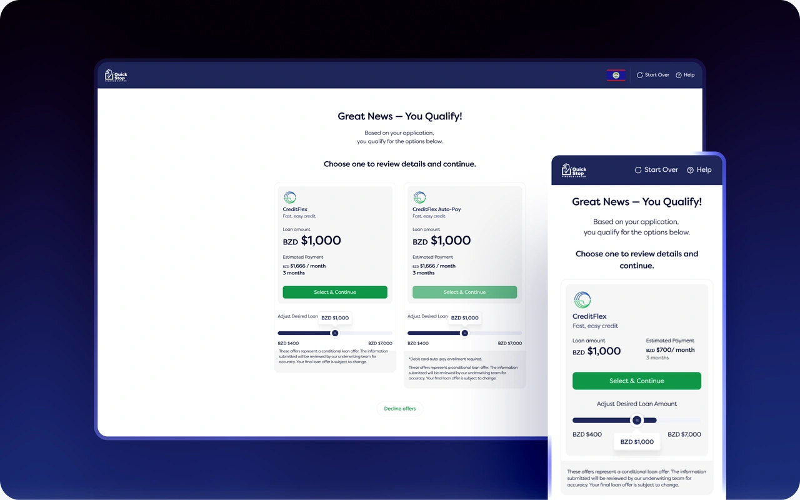
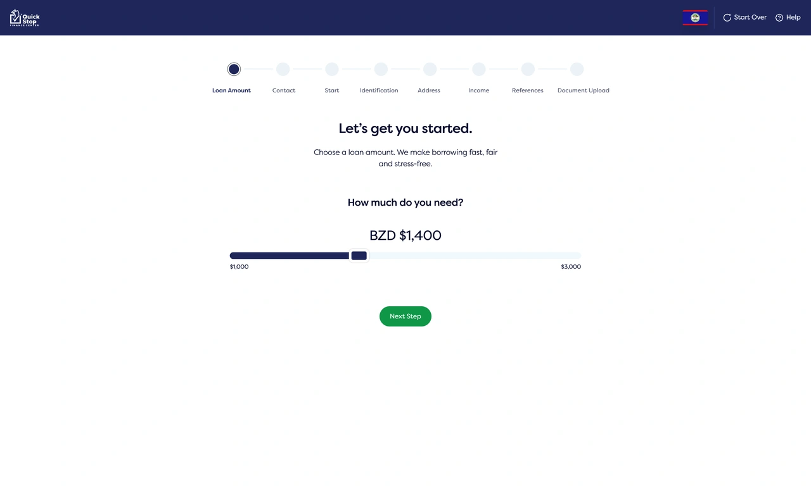
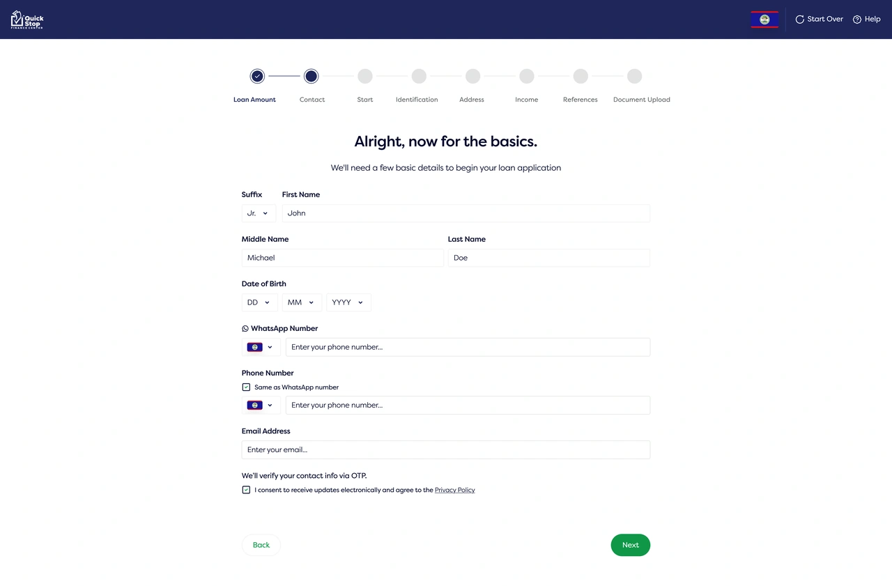
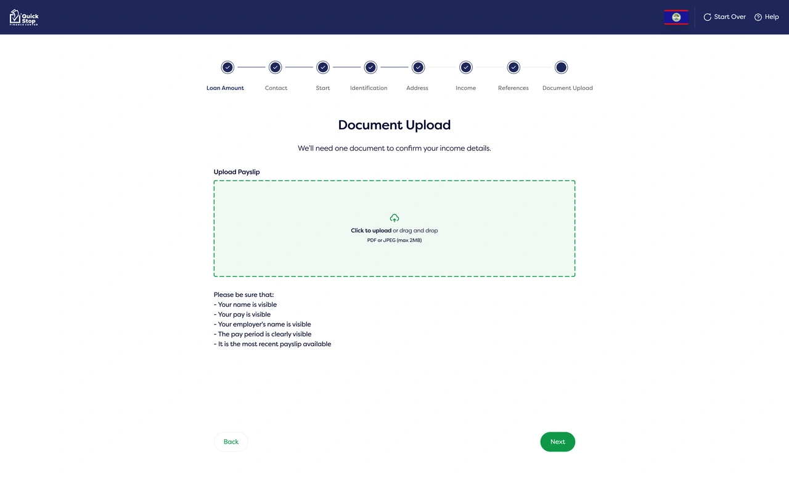
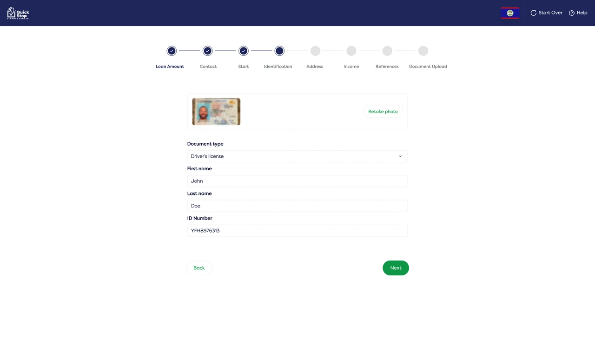
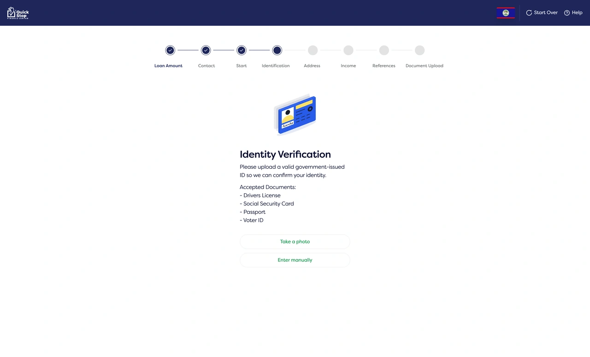
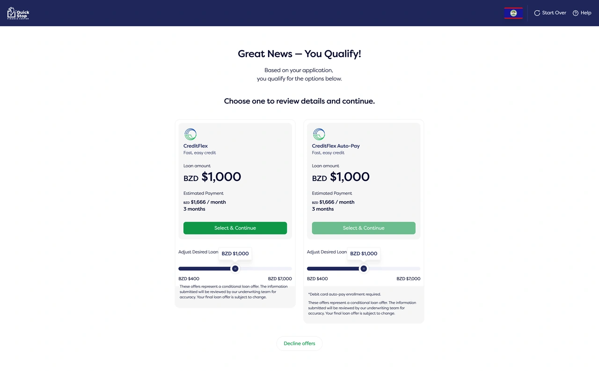
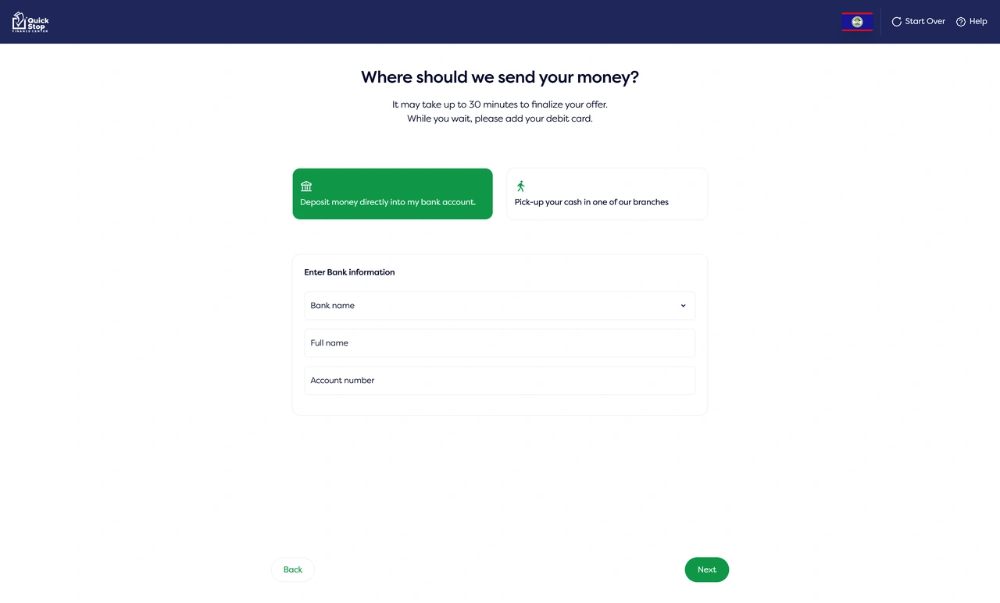
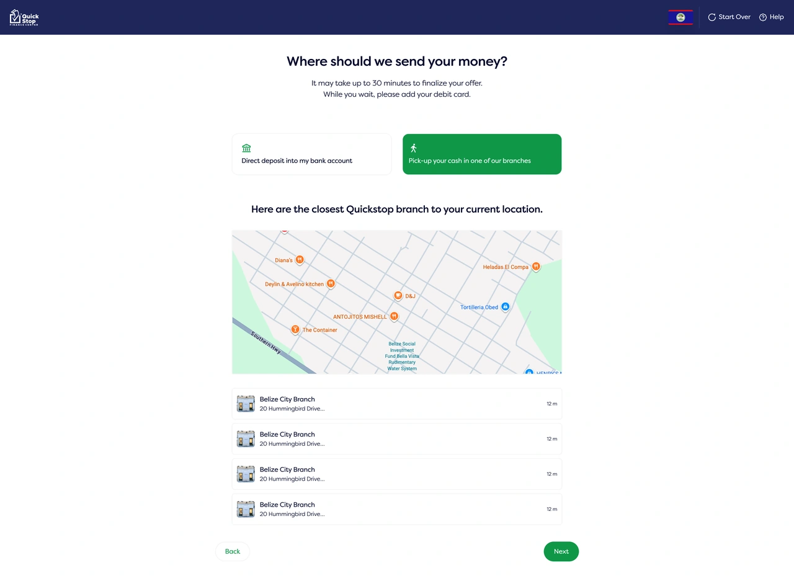

Project Overview
A digital lending startup set out to improve its loan application after identifying a competitor with a noticeably stronger onboarding experience. The existing flow felt dated, difficult to follow, and lacked the clarity needed for applicants to confidently complete a lengthy financial application.
I redesigned the onboarding experience from start to finish, creating a flow that felt more modern, trustworthy, and predictable while preserving all business and compliance requirements.

The Problem
The existing onboarding suffered from both usability and presentation. Information was introduced in an inconsistent order, document uploads interrupted the journey, and applicants had little understanding of what came next. Visually, the experience no longer met the expectations of a modern financial product, making an already complex application feel even more demanding.

(Before) Prior to the redesign, the visual style appeared outdated and lacked modern appeal.
Constraints
Simplifying the experience did not mean collecting less information.
Every section of the application supported underwriting, identity verification, fraud prevention, or regulatory compliance. Applicants still needed to provide personal details, financial information, passport images, and supporting documents before their application could be assessed.
The opportunity wasn't to shorten the journey, but to make a long process feel more structured, predictable, and manageable.


Screens showing how I designed the form and input field-heavy steps



Seamlessly integrate image uploads and third-party verification without interruptions.



Screens that display a range of options for users to choose from

Handling errors using clear, straightforward language


Mobile versions of key screens
Design Approach
The onboarding was redesigned across desktop and mobile with equal attention to usability and visual design.
The interface was modernized through improved hierarchy, spacing, typography, and component consistency, creating a more polished experience that inspired greater confidence. At the same time, the application was reorganized into logical stages with clearer progress, better context, and dedicated document upload steps that reduced interruptions and helped applicants maintain momentum throughout the journey.
Outcome
The redesigned onboarding was approved by stakeholders and progressed into development.
The project established a stronger foundation for the loan application experience, balancing business requirements with a flow that is clearer, more cohesive, and ready for implementation.